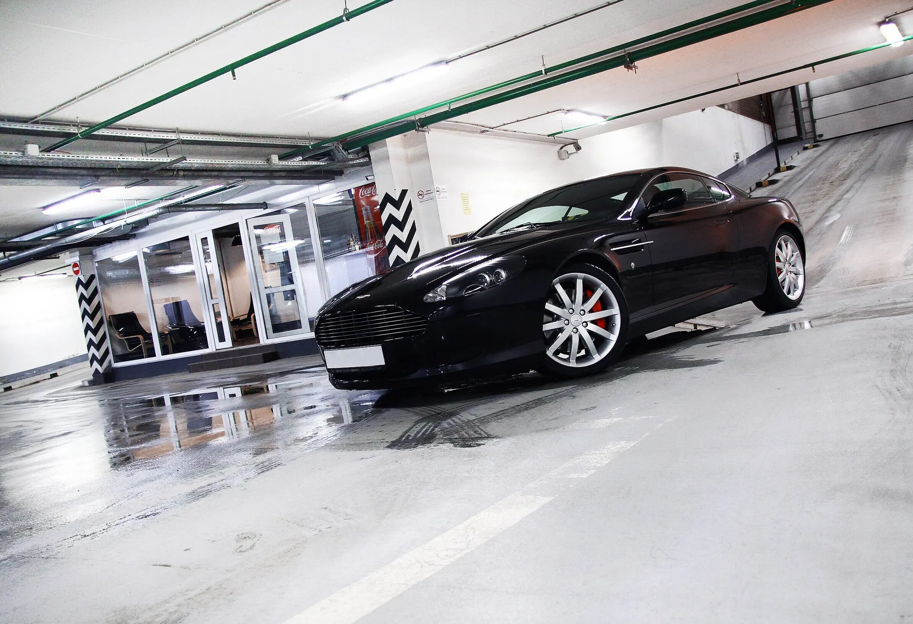
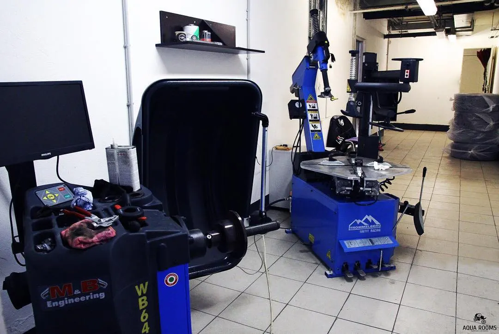
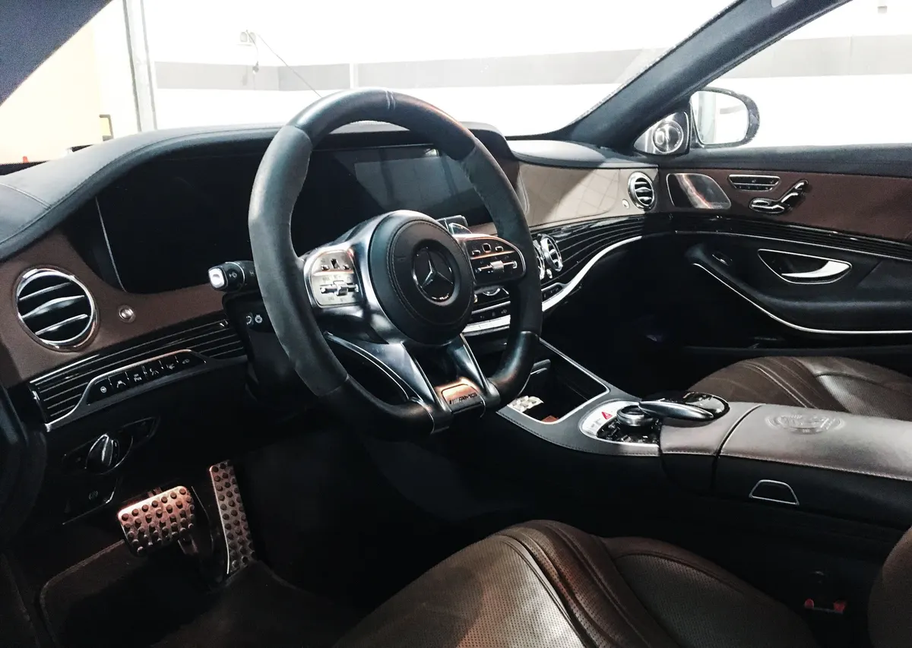
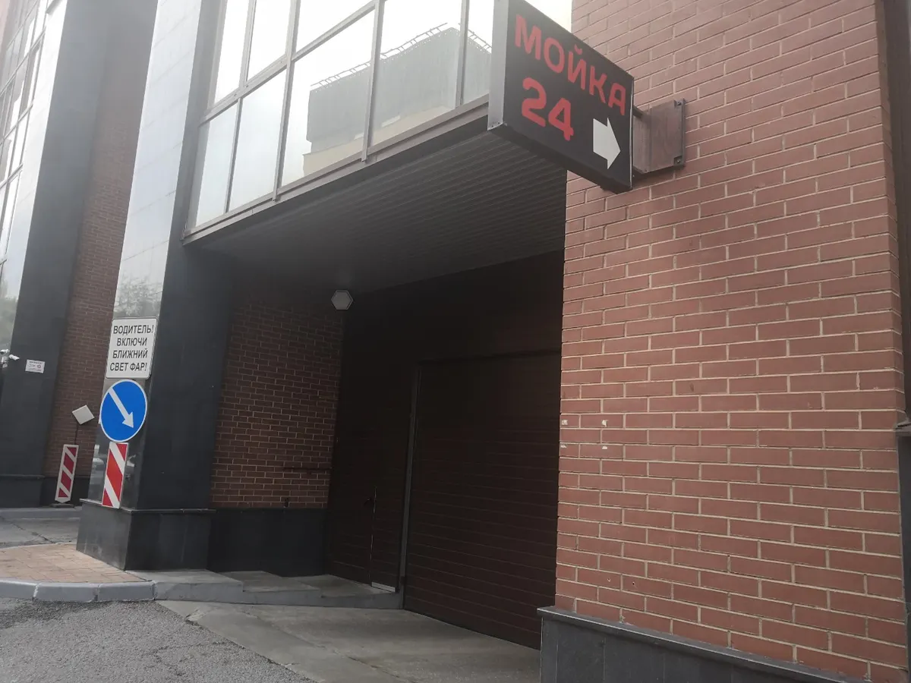

Мойка, детейлинг, химчистка и шиномонтаж · Москва, Смоленская
Мойка и детейлинг в центре Москвы: круглосуточно, под крышей
Мойка, химчистка, полировка и шиномонтаж одним адресом. Оставьте машину на подземной парковке и подождите в комнате с кофе.
- 4,9 на Яндекс.Картах, 233 отзыва
- Круглосуточно, подземный паркинг
- Мойка, химчистка, детейлинг и шиномонтаж

Цены с карточки на Яндекс.Картах
Указаны для минимального класса автомобиля. Точную сумму для вашей машины назовём по телефону или в WhatsApp.
Мойка
- Мойка кузовапо карточке 1350-1900 ₽, минимальный классот 1 350 ₽
- Детейлинг-мойка кузова3 фазы, очистка дисков и насадок выхлопаот 1 900 ₽
- Комплексная уборка салонапылесос, очистка всех стёколот 900 ₽
Детейлинг и салон
- Химчистка салонаминимальный классот 12 000 ₽
- Полировка кузовавосстановительная, 1 класс авто, итог по сложностиот 15 000 ₽
- Нано-керамическое покрытиегидрофобный эффект, минимальный классот 6 000 ₽
- Защита полиуретановой плёнкойцена индивидуальная по зоне и классуот 60 000 ₽
- Антихромуточнить
- Кондиционер кожиуточнить
- Полировка фаруточнить
- Очистка подкапотного пространствауточнить
Шиномонтаж
- Шиномонтажремонт дисков, шин, грыж и боковых порезов, цена зависит от размераот 2 500 ₽
- Мотошиномонтажуточнить
Позиции со словом «уточнить» назовём по телефону или в WhatsApp. Что входит в каждую услугу, расскажем при заказе.
Как это проходит
- 01
Заезжаете в паркинг
Дом из красного кирпича на Ружейном, 3. Над въездом вывеска «МОЙКА 24».
- 02
Оставляете или ждёте
Можно оставить машину и уйти по делам или подождать в комнате ожидания с кофе и Wi-Fi.
- 03
Делаем выбранное
Мойка, химчистка, полировка, керамика или шиномонтаж в одном месте.
- 04
Забираете чистую машину
Оплата картой, в том числе из машины.



Почему к нам возвращаются
Круглосуточно
Карточка на Яндекс.Картах: открыто все дни и ночью, клиенты пишут про ночную мойку.
Всё в одном месте
Мойка, химчистка, детейлинг и шиномонтаж без поездок по городу.
Можно оставить машину
Поставим на подземный паркинг, пока вы занимаетесь делами.
Комната ожидания
Кофе, Wi-Fi и вид на мойку, если хочется посмотреть на работу.
Отзывы с Яндекс.Карт
«Место очень достойное! Делал там химчистку салона. Мне понравился и результат и цена и скорость. От пятен и разводов на потолке не осталось и следа. Персонал очень вежливый и отзывчивый.»
Никита С. · 17 октября 2025
«Отличная автомойка. Моюсь тут уже 10 лет. Очень качественно работают. Домывать ничего не приходится, как это обычно происходит в других мойках. В комнате ожидания чисто и можно попить кофе. Команда отличная, сотрудники вежливые и бережно относятся к автомобилям.»
Александр К. · 2 апреля 2026
«Моюсь тут уже не первый год , можно оставить машину и пойти по своим делам, машину поставят на подземный паркинг. Делал даже химчистку . Все делают качественно. Хороший коллектив»
Сергей К. · 10 декабря 2024
Отзывы с карточки на Яндекс.Картах, без правок.
Частые вопросы
Где вас найти?
Москва, Ружейный переулок, 3. Это подземный паркинг жилого дома из красного кирпича, над въездом вывеска «МОЙКА 24». От метро «Смоленская» около 770 м.
Когда вы работаете?
Круглосуточно, все дни. Перед приездом лучше позвонить: в загруженные часы возможна очередь.
Нужно ли записываться?
Можно позвонить или написать в WhatsApp и спросить про свободный бокс. В часы пик возможна живая очередь.
Сколько стоит мойка кузова?
По карточке на Яндекс.Картах мойка кузова стоит от 1350 до 1900 ₽ для минимального класса автомобиля. Для вашей машины назовём точнее по телефону.
Что ещё делаете, кроме мойки?
Детейлинг-мойка, химчистка салона, полировка, нано-керамика, антихром, защитная плёнка, шиномонтаж и мотошиномонтаж, ремонт дисков.
Чем можно оплатить?
Картой, в том числе из машины. Принимаем топливные карты Роснефть, Юникард-Ойл, Газпром, РН-Карт.
Приезжайте в любое время суток
- Адрес
- Ружейный переулок, 3, Москва (подземный паркинг), Москва
- Часы
- Круглосуточно, все дни
- Телефон
- +7 (495) 643-00-50